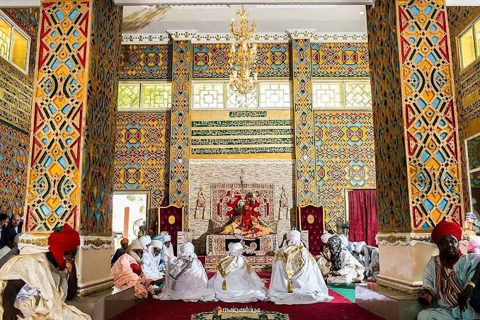
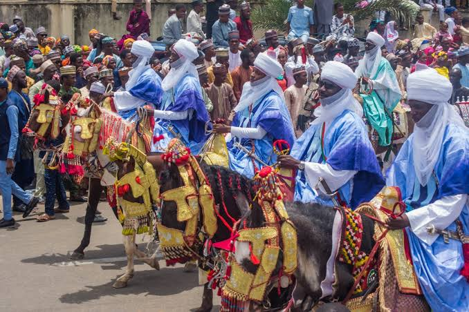

Introduction
Kano State, located in the northwestern region of Nigeria, is the most populous state in the country. Founded as a city-state in the 10th century, Kano has grown into a major commercial and cultural center. Known as the "Center of Commerce," Kano's capital city, also named Kano, is a bustling metropolis with a rich history that spans over a thousand years.
Geography and Climate
Kano State is bordered by Katsina, Jigawa, Bauchi, and Kaduna States. The state is largely covered by the Sudan Savanna, characterized by thorny shrubs and scattered trees. The climate is predominantly hot and dry, with a short rainy season from June to September. The state also experiences the Harmattan, a dry and dusty trade wind that blows from the Sahara during the cooler months.
Culture and People
Kano is predominantly inhabited by the Hausa and Fulani people, but it is also home to various other ethnic groups, making it a culturally diverse state. The city of Kano is famous for its traditional craftsmanship, particularly in leatherwork, textiles, and metalwork. The Dala Hill, a historical site in Kano, is considered the birthplace of the ancient Kano Kingdom. The Durbar Festival, held annually during Eid, is one of the most spectacular cultural events in Kano, featuring colorful horse parades, traditional music, and dances.
Economic Activities
Kano State is one of Nigeria’s major economic hubs, with a diverse economy that includes agriculture, manufacturing, and trade. The state is a leading producer of crops such as groundnuts, cotton, and millet. Kano’s market, known as Kurmi Market, is one of the largest and oldest in West Africa, offering a wide variety of goods from local crafts to international products. The state also has a thriving textile industry, with numerous factories producing fabrics for both local and international markets.
Tourist Attractions
Kano State is rich in historical and cultural attractions. The Gidan Makama Museum, located in the heart of Kano city, offers a glimpse into the history and culture of the Hausa people. The Kano City Wall, built in the 14th century, is another major attraction, symbolizing the ancient defense mechanism of the city. The Emir’s Palace, a symbol of traditional authority, is a stunning architectural masterpiece that remains an important cultural institution in the state.
Education and Innovation
Kano State is a center of learning in northern Nigeria, with several tertiary institutions including Bayero University Kano, one of the oldest universities in the region. The state also boasts a number of research institutes and vocational training centers, contributing to education and innovation in various fields, particularly agriculture and technology.
Gidan Makama Museum
Gidan Makama Museum is a museum in Kano, Nigeria. This building served as temporary palace of Sarakunan Hausa (Kings of Hausa) of Kano before the current palace Gidan Rumfa was constructed in the 15th century. The museum has a significant collections of arts, crafts and items of historic interest related to the Kano area. Located opposite the Emirs Palace, Gidan Makama is a palace built in the 15th century by the 20th Emir of Kano, Muhammadu Rumfa (1463-1499). The well maintained compound is great example of the palaces built by the aristocrats who ruled the medieval Sahel. The building’s windows were designed to maximize ventilation and the pillars and gateways are decorated with geometric designs picked out in white. Inside the rooms, white-painted ribs and columns support roofs of split palm wood.
Emir of Kano Palace
The Kano Emir's Palace, also known as the Emir's Palace or "Gidan Makama," is a significant historical and cultural landmark in Kano, Nigeria. The palace is the traditional residence of the Emir of Kano, a prominent figure in the Kano Emirate, which is one of the oldest and most influential Islamic states in northern Nigeria. The palace has its roots in the ancient city of Kano, which has been a center of trade, culture, and political power for centuries. The current structure has evolved over time, with different emirs adding their own touches to it. Originally built in the 15th century, the palace has undergone several renovations and expansions. The architecture reflects a blend of indigenous Hausa and Islamic styles, characterized by intricate woodwork, courtyards, and decorative elements.The palace complex typically includes various courtyards, residential quarters, and administrative areas. It features traditional Hausa architectural elements, such as high walls, large courtyards, and decorative plasterwork.Traditional materials like mud and local wood have been used in construction, with more recent renovations incorporating modern materials while preserving traditional aesthetics.
Durbar Festival
The Kano Dubar Festival is a vibrant and historic celebration held annually in Kano, Nigeria, to honor and commemorate the traditional and cultural heritage of the Kano Emirate. It is one of the most significant and colorful festivals in northern Nigeria, showcasing a blend of historical traditions, cultural practices, and community spirit.The festival has its roots in the traditional practices of the Kano Emirate, one of the oldest and most influential Islamic states in the region. It has been celebrated for centuries, with its origins tied to the customs and ceremonies of the Hausa people.The Dubar Festival traditionally marks important events such as the annual visit of the Emir to the city, significant religious and cultural observances, and the commemoration of historic events or achievements.One of the central features of the Dubar Festival is the grand procession that takes place through the city. The Emir, accompanied by his entourage and various groups of horsemen and traditional dancers, parades through the streets, showcasing elaborate costumes and traditional regalia. The festival is renowned for its display of horsemanship. Riders dressed in colorful, ornate attire demonstrate their skills and perform intricate maneuvers, adding to the spectacle and excitement of the event.The festival includes performances of traditional music and dance, which highlight the cultural heritage of the region. Drumming, singing, and dancing are integral parts of the celebration, reflecting the rich artistic traditions of the Hausa people. Various cultural displays and exhibitions are held during the festival, showcasing traditional crafts, clothing, and food. These activities provide insight into the customs and lifestyle of the Kano Emirate
Conclusion
Kano State is a blend of ancient tradition and modernity. Its rich cultural heritage, economic significance, and educational institutions make it a key destination in Nigeria. Whether you are interested in exploring historical sites, experiencing vibrant cultural festivals, or engaging in commerce, Kano State offers something for everyone.